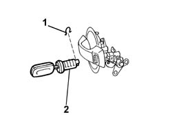

7020F26 Rear swing door LOCK for key. - R.R.
- Path
- Procedures > 70 FITTINGS > 7020 LOAD CARRYING COMPARTMENT DOORS > 7020F rear swinging door closure devices > 7020F26 Rear swing door LOCK for key. - R.R.
- Kind
- repair procedure (removal / refitting; the operation number is the code)
- Applies to
- all engines; all production periods
- Interactive page
- https://sloeber94.github.io/elrnDB-fDbl/en/#/2585088
Applies to: all engines; all production periods
 Removing
Removing
 Refitting
RefittingDisconnect the battery negative terminal.
Op. 7020E34 REAR DOOR FLAP INTERIOR PANEL - R+R
Op. 7020F34 REAR SWING DOOR LOCK INTERIOR MECHANISM - R+R
Op. 7020P22 MOTOR FOR REAR SWING DOOR LOCK - R.R. WITH DOOR PANEL REMOVED
Op. 7020F22 REAR SWING DOOR EXTERIOR HANDLE - R+R
Insert the ignition key in the barrel.
1. Remove the retaining clip.
2. Rotate and remove the clip.

Applies to: all engines; all production periods
Refitting
RemovingInsert the retaining clip in its seating.
Insert the key barrel in its seating until it clicks into place.
Op. 7020F22 REAR SWING DOOR EXTERIOR HANDLE - R+R
Op. 7020P22 MOTOR FOR REAR SWING DOOR LOCK - R.R. WITH DOOR PANEL REMOVED
Op. 7020F34 REAR SWING DOOR LOCK INTERIOR MECHANISM - R+R
Op. 7020E34 REAR DOOR FLAP INTERIOR PANEL - R+R
Connect the battery negative terminal.
Topics linked from this page (4)
- 7020E34 rear door flap interior panel - r+r
- 7020F22 rear swinging door exterior handle - r+r
- 7020F34 rear swinging door lock interior mechanism - r+r
- 7020P22 motor of rear swinging door lock - r r with door panel removed